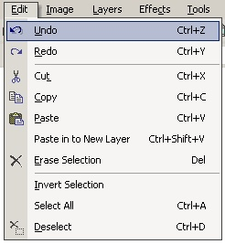

Undo Operation
|  The Undo Operation (Edit-->Undo) allows for undoing an action which could have been a mistake, or otherwise was determined to be unwanted. The Undo Operation is also accessible from the History Window. Also, note that most actions you perform in Paint.NET can be undone. |